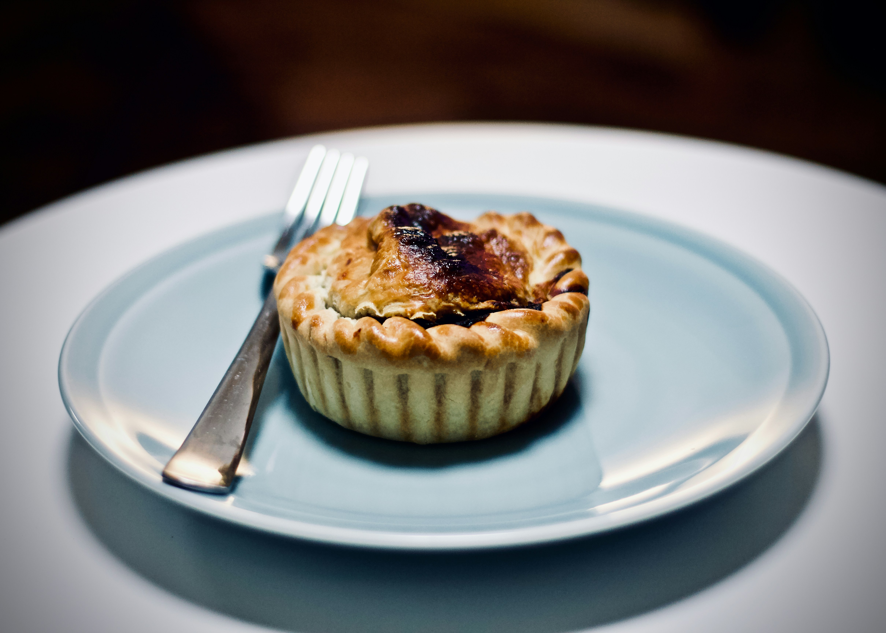
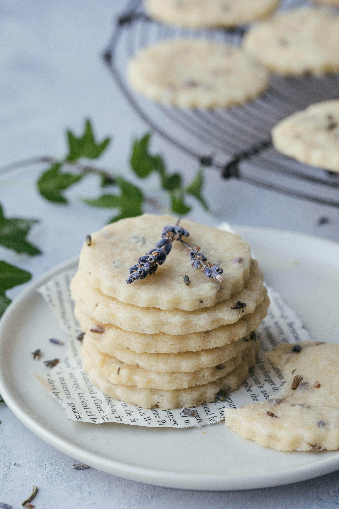
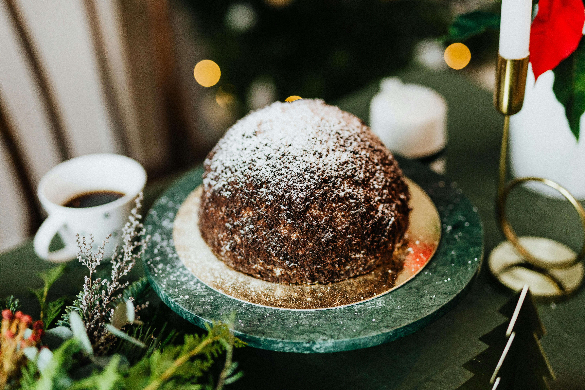
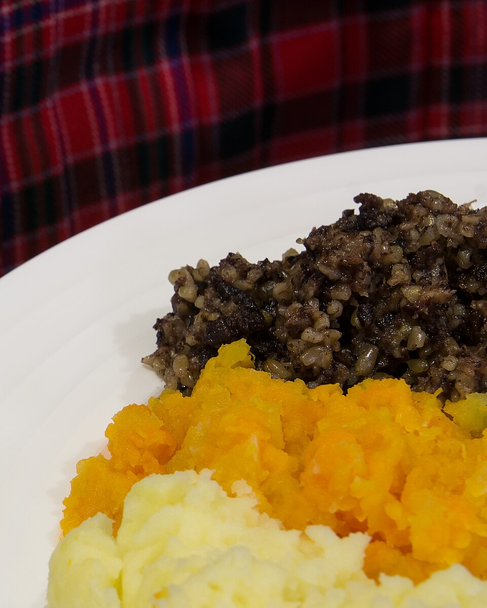
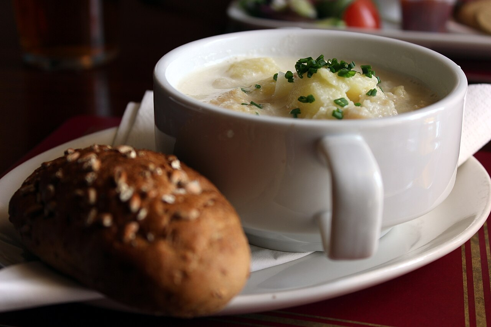
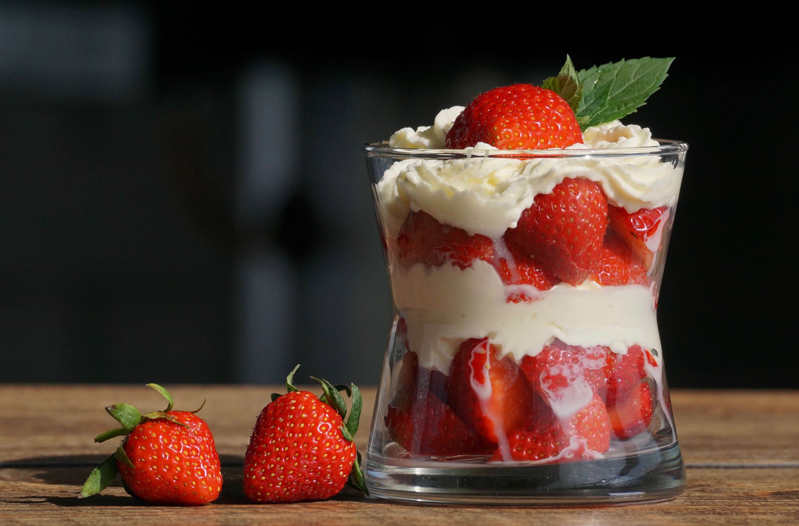

Scotch Pie
Empanada escocesa de carne picada con especias
Ver receta →

Shortbread
La galleta de mantequilla escocesa
Ver receta →

Clootie Dumpling
Un budín de postre tradicional escocés hecho con harina, pan rallado, fruta seca, sebo, azúcar y especias
Ver receta →

Haggis
Hígados de cordero mezclados con avena y especias, cocido en estómago de oveja
Ver receta →

Cullen Skink
Sopa cremosa de haddock ahumado, patatas y cebolla
Ver receta →

Cranachan
Crema batida con frambuesas, whisky, miel y avena tostada
Ver receta →